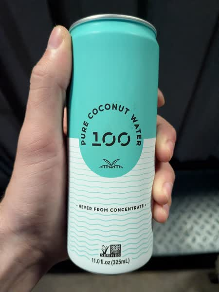

October 2026 · 11.0 fl oz (325 mL) · Still · Vietnam · Pasteurized · No Added Sugar · Not Organic
Ranked 22nd of 42 coconut waters I have scored · below C2O Organic (4.8) · above Goya Original (4.7). See the full ranking.
This is a Vietnamese water with nothing added. Likely heat pasteurized.
Super sweet dessert water. Slightly caramelized taste but overall quite mild and almost bland. Sweetness means it is less refreshing than more fresh options.
These coconuts are grown in habitats threatened by palm oil deforestation. If you find this site useful, consider donating to the Rainforest Action Network.